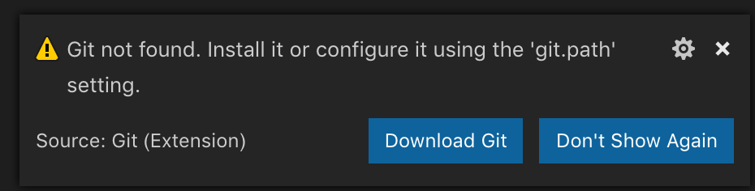
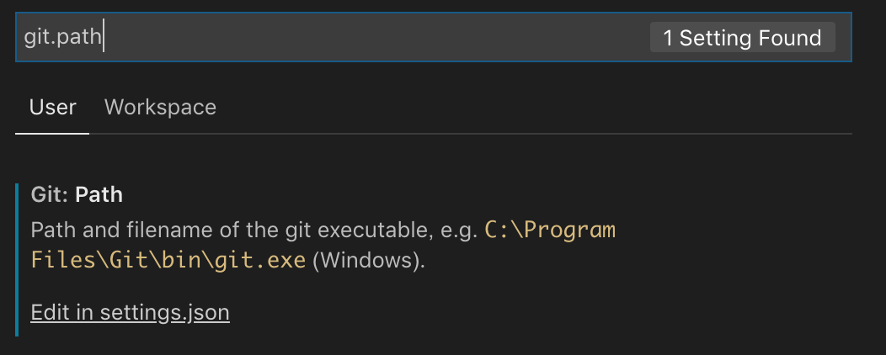
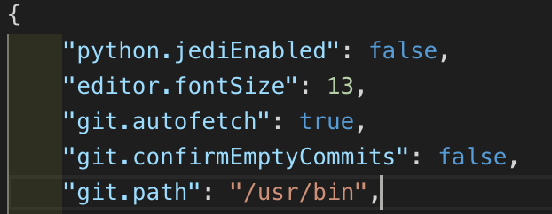

Visual Studio Code(以下、VS Code)をアップデートしたらこんな通知が出るようになりました。

「Gitが見つからないよ！」って・・・いや、君今までしこたまGit使ってたじゃないか。
理由はともかく、このままではGitの各種コマンドが利用できないので、設定します。
左下の歯車マークから、あるいはCommand + ,で「Settings」画面を表示します。

出てきた画面に「git.path」と入力します。すると、「Settings.jsonで設定してね」と言われるのでSettings.jsonを開きます。

ごちゃごちゃしてますが、下のところに"git.path": "/usr/bin"を追記しました。なお、gitのパスはコンソール画面にてwhich gitすればわかります。
編集が終わったら保存します。これで完了です。なお、いつのバージョン以降からかは失念しましたが、設定の変更を行ってもVS Codeを再起動する必要はなく即時反映されます。
XcodeをインストールしたらGitが使えなくなりました。なんかライセンス契約に同意する必要があるみたいです。
指示に従いコマンド発行および同意を行ったら、Gitが再び利用できるようになりました。
$ git --version
Agreeing to the Xcode/iOS license requires admin privileges, please run “sudo xcodebuild -license” and then retry this command.
$ sudo xcodebuild -license
You have not agreed to the Xcode license agreements. You must agree to both license agreements below in order to use Xcode.
（中略）
“Apple Developer Program License Agreement” means a separate agreement that may be entered into between You and Apple regarding the development and su
By typing 'agree' you are agreeing to the terms of the software license agreements. Type 'print' to print them or anything else to cancel, [agree, print, cancel] agree
You can view the license agreements in Xcode's About Box, or at /Applications/Xcode.app/Contents/Resources/English.lproj/License.rtf
$ git --version
git version 2.20.1 (Apple Git-117)